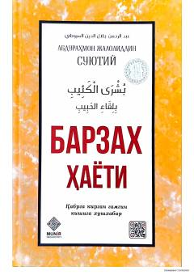

BHMo'min bandaning qabr va barzax olamidagi hayoti haqidagi xushxabarlar to'plami.
Ushbu kitobda mo'min bandaning vafotidan keyingi hayoti, ya'ni barzax olami haqidagi islomiy ma'lumotlar va xushxabarlar bayon etilgan. Asar qabr hayoti, undagi savol-javoblar va mo'minlar uchun tayyorlangan ne'matlar haqida hikoya qiladi.